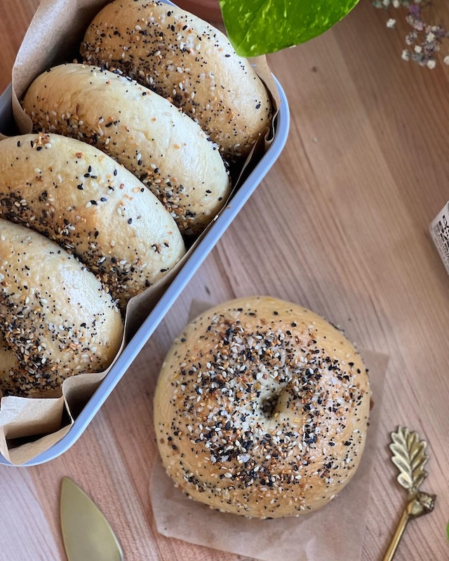

Homemade Everything Bagels


PREP: 1 hour 30 min

Cook: 35 min

Servings: 8 Bagels
Rating: 5/5
Ingredients
Yeast Mixture
- 1 1/2 tbsp Active dry yeast
- 1 tbsp Sugar
- 2 1/4 cup Warm water
Dough
- 5 cups All purpose flour
- 2 tsp Kosher salt
- 3 tbsp Light Brown Sugar packed
Boiling Water
- 1/4 cup Light Brown Sugar
- 1 Pot Water
Toppings
- Everything Bagel Seasoning
Egg Wash
- 1 Egg
- 2 tbsp Water
Instructions
Prepare Your Yeast Mixture
- Add your yeast, warm water, and sugar together in a bowl. Cover with a damp paper towel, and allow to sit for 10 minutes.
Prepare the Dough
- While your yeast is resting, add all of your flour, brown sugar, and salt to a separate bowl and whisk together.
- After 10 minutes, add your yeast mixture to the rest of your ingredients.
- Take a large mixing spoon and roughly combine your dough ingredients.
- Once your dough has shaped into a rough dough ball, take it out of your bowl and on to a lightly floured surface
- Now, you can use a stand mixer – but if you don't have one, with lightly floured or oiled hands, knead your dough for 10- 15 minutes until smooth.
- I highly recommend sticking with just 5 cups of flour, but ofc there are many factors that play into how much flour you may need. If you feel like your dough is far too sticky add an extra 1/2 cup. If it has shaped well into a ball with just 5 cups of flour (still slightly sticky) just oil your hands a bit and continue to knead. It will eventually come together beautifully.
- Next, separate your dough into 8 dough balls. Cover with a damp, clean towel and allow to rest for 15 minutes
Shape Your Bagels
- After 15 minutes, take your index finger and press a hole through the center of each dough ball.
- To further improve the bagel shape, lightly flour your hands and rotate your dough in a circular motion – slightly stretching the dough without ruining the overall shape of our bagels. (watch video above for a visual)
- Add a square cut out of parchment paper under each bagel as you finish shaping them. This step will be extremely helpful once we begin boiling our bagels.
- Cover your bagels once again with a clean, damp towel. Allow to rest for 30 minutes
- Preheat oven to 350° F (177° C).
Water Bath
- Fill a large pot with water, about 2 quarts. Whisk in your 1/4c brown sugar, and bring to a boil.
- Boil your bagels for 1 minute on each side. About 2-3 bagels at a time, you don't want to overcrowd your pot.
Baking your Bagels
- Add your boiled bagels to a prepared baking sheet.
- Optional, using a pastry brush, brush the egg wash on top and around the sides of each bagel. Provides an extra chewy and slightly more golden crust. Lastly, sprinkle on your everything bagel seasoning. The amount is up to you.
- Bake for 25-35 minutes. Every oven performs differently, keep a close eye on them. You want your bagels to be beautifully golden, but also not too deep in color.
- Remove from the oven and allow bagels to cool on the baking sheet for 10-15 minutes, then transfer to a wire rack to cool completely.
- Slice your bagel with a serrated knife, toast, and top with whatever you'd like!